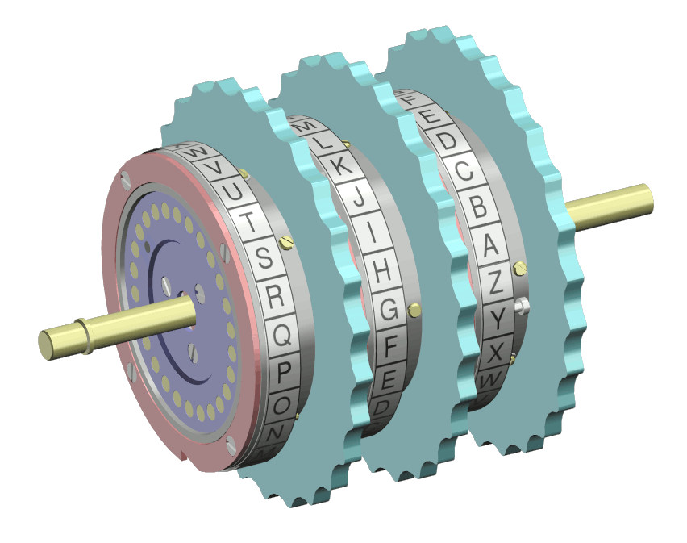
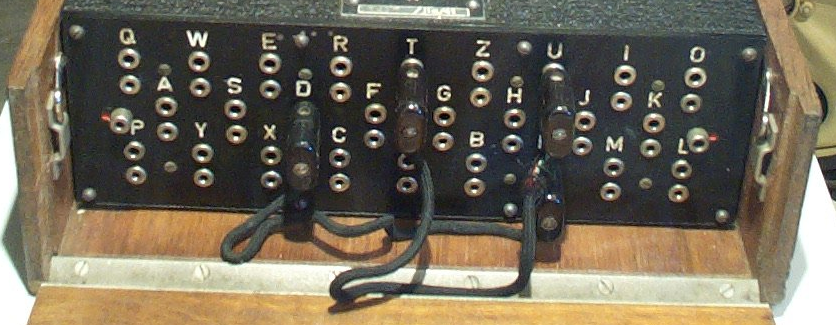

This is an extraction of pertinent information from source material. I have distilled (simplified?) information down to what is needed to create a simulation of an Enigma Machine. There were many version of the Enigma machine. I used this material for my simulation.
The Enigma machine only encoded capitol letters (A - Z)
- lowercase letters were not allowed
- numbers were spelled out (one, two, ...)
- unprintable characters were never transmitted
- punctuation, spaces, etc. where replaces by an 'X'
A substitution cipher substitutes one letter for another. Plaintext is thus converted to ciphertext. Knowing the substitution algorithm (process steps), ciphertext can be converted back to plaintext.
The Enigma Machine used a complicated set of mechanical substitution ciphers.
Each rotors is wired differently and contains a different fixed substitution cipher. In some Enigma machines three rotors were used, but some used as many as eight. The simulation will use three rotors.
Each rotor was given a name using Roman numerals: I, II, III, IV, V, VI, VII and VIII. To further complicate things the rotors were allowed to be moved around before use. Rotor II might be the left one, with rotor III in the middle and rotor I on the right.
Each rotor also has an attached an alphabet ring that turns with the rotor and was used to set the initial (starting) position of the rotors. The positions were numbered A-Z.
The person doing the encrypting would choose random rotor starting positions and include them at the start of the messages. They sent the rotor positions in the clear followed by the ciphertext.
Which rotors used by the sender and receiver was published in a document. Sometimes it was changed daily. For the simulation the sender and receiver will agree on the order. (Although, if they want to publish a document ...)
Remember, each rotor is named using a Roman numeral.

commons.wikimedia.org/wiki/File:Enigma_rotor_set.png
The reflector appears to be nothing but a fixed rotor reflecting each character back thru a different position. A selected character is passed thru each rotor twice. Once in each direction before the results is lit up on the lampboard. Thus passing the character thru the equivalent of six rotors.
A keypress caused one or more of the rotors to turn. The first rotor would turn one letter position for each keypress. The second rotor turns one letter after the first rotor made a complete rotation. The third rotor then turned one letter for every complete rotation of the second rotor.
In 1930 the German army versions added a plugboard. This allows letters to be swapped before going to the rotors.
Since there are 26 letters, up to 13 swaps could be done but typically only up to 10 were used.
For example if the plugboard was wired to swapped two letters (A and D)

commons.wikimedia.org/wiki/File:Enigma_Verkehrshaus_Luzern.jpg
The plugboard swaps characters before and after they are sent to the rotors.
How the Enigma machine works | Animation
(YouTube)
The Enigma Code
(youTube)
The Inner Workings of an Enigma Machine
(YouTube)
How did the Enigma machine work?
Enigma Simulator v7.0
Enigma machine
(Wikipedia)
Enigma machine & Rotors
(Wikipedia)
Enigma rotor details
(Wikipedia)
Technical Details of the Enigma Machine
Enigma wiring (Crypto Museum)
The Enigma Machine (stanford.edu)
The components of the Enigma machine
The Enigma Enigma: How The Enigma Machine Worked